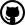

Knitting Projects
FOSSASIA has several open-source knitting projects. Here, you find an overview over these projects. You can get started developing on the projects or just check them out and install them. In case you are interested to connect with people, you can get in touch with us :). If you are interested in related work, look here.
List of Knitting Projects
Here you can find a list of knitting projects in the FOSSASIA organization:
kniteditor 
The Knit Editor is an editor for the knit exchange format. It allows creating digital knit works from images and knitting it with several knitting machines.
This kniteditor is developed together with All Yarns Are Beautiful. You can download the releases and install them.
Contribute:
Tutorial Videos,
Repository


knittingpattern
The knittingpattern is a Python library for an exchange format for knit work.
It allows specifying how to knit a particular piece of work.
Contribute:
Tutorial Videos,
Repository


AYABInterface
The AYABInterface is used by the Knit Editor to
convert knittingpatterns into machine instructions.
It can be used standalone without these other projects.
Contribute:
Tutorial Videos,
Repository


knitting.fossasia.org
This is this overview site over the different knitting projects and aims at introducing new people to the community. You can
- visit the website
- add new entries for projects and related work
- read a blog post about this site.
Contribute:
Repository

circle-knitting
There are commercial circular knitting machines, that are nearly completely made from plastic. A popular modul is the Addi Express. Plastic can be easily printed out on 3D printers. This project implements the idea to code a circular knitting machine. As inexpensive small PCs components like the Rapsberry PI and Arduinos become increasingly powerful there is even an option to include them as optional components in such a 3D printed knitting machine.
Contribute:
Repository

knitweb
knitweb is an app frontend and backend that works together with the
knitlib server and uses the knitpat format.
Contribute:
Repository

knitlib
Knitlib is a library designed to support the operation of varied knitting machines, mechanisms, and hacks. Knitlib is based on projects like AYAB, PDD, and KnitterStream to control knitting machines. Knitlib features a plugin system for knitting machines and implements an API to control machines' operation, knitting jobs and knitting patterns. The software is based on Python. There also is a Web API. Among the primary tasks is to develop plugins based on this solution to add support for more machines.
Contribute:
Repository


knitserver
Knitserver is a Knitlib client that provides REST API endpoints for knitting machine software and control. Knitserver is designed to interact with Knitweb.
Contribute:
Repository

How to Contribute
You can have various reasons to contribute to the software. This section aims to give you an overview over ways to get started.
If you like to watch a video, you can view the tutorial videos on getting started with development. If you have any questions, please get in touch :)
Translate
A majority of people on earth do not speak English. By translating software, you make it accessible to thousands of people.
You can add translations to these projects:
Improve Metrics
Improving code metrics requires coding but not the understanding of how the code works. You learn how to set up this specific environment, fix some code and while doing this, you read it and get familiar with it. When your pull request is merged, you have contributed to the health of the project.
Some of the repositories have code metrics like code coverage and code quality. They can be improved easily. E.g. in this example you can find this error:
bbox = list(map(lambda f: f*zoom, layout.bounding_box))
missing whitespace around arithmetic operator
This can fix this by adding spaces around the operator.
Solve Issues
All the projects have "issues" attached to them. They show bugs and feature requests. A solved issue improves the life of somebody on earth. When solving the issue, you are introduced to the development process of the project and learn how to adapt the project to your needs.
Issues can be found in the issue tracker of github.
You can find them through the "Repository" links of the projects or by clicking these badges:

The badge above links to the overview of all listed projects.
If you find an issue which interests you, please comment that you would like to work on it.
This way, you get help and it is not done twice.
Issues can be easy. You may pick those first to get into the project.
Issues can have multiple bullet points or check boxes.
You do not need to solve all of them.
You can choose one and solve it.
The projects have tests and documentation:
Code should be documented and tested.
Consider trying out documentation driven development,
Test-First and test-driven development.
Get in Touch
FOSSASIA has a Slack to chat in the community. You can use the main channel or #knitting.
You can contact me directly. I started this site. You can find me on github and Slack under the name "niccokunzmann".
There is a mailing list for knitting applications such as these listed. You can also join the FOSSASIA mailing list.
You can comment on issues and through these reach the developers directly.
We have a Gitter chat which you can join: 
For a broad overview on how to join FOSSASIA, see the FOSSASIA labs.
Related Work
This section contains links and related projets and work in the field of knitting. Additionally, other overview sites are listed here.
ayab-apparat
This Software is a predecessor of the Knit Editor. It is written in Python and Qt. AYAB maintains this project. The 2016 Google Summer of Code Project forked this repository and added the issues for the kniteditor, knittingpattern and AYABInterface.
Contribute: Repository
Links
These are links to other projects and overview sites. The objective is to ease exploring the network of people and projects.
Outdated Projects
These projects are a bit older, obsoleted or not maintained any more.
knitpat
knitpat contains a pattern definition format for knit work.
It is the predecessor of the knittingpattern library.
Contribute:
Repository

knitapps
An older version of this overview site.
Contribute:
Repository